“Space Trip - HTML5 Game Template” Documentation by “ArtHeads.Co” v1.0
“Space Trip - HTML5 Game Template”
Created: 27/05/2017
By: ArtHeads.Co
Thank you for purchasing one of my game templates.
Table of Contents
- Package Folders
- HTML5
- Construct 2 project
- Menu Layout
- Game Layout
- Sharing system
1) Package Folders - top
Check out a folder structure of this package to get started with ease.
Game package contains 5 folders:
- Documentation - contains a help file for a quick start;
- HTML5 - game files ready for publishing to your website;
- Sprites - all images in PNG and PSD files;
- SFX - all sound fx and music;
- Sharing - social sharing for Facebook and Twitter.
And Construct 2 game source file (.capx):
- SpaceTrip_v1_3.capx - Fully editable source file of the game created in Construct 2 and ready for export to mobile or web platforms immediately.
2) HTML5 - Changing images and sounds - top
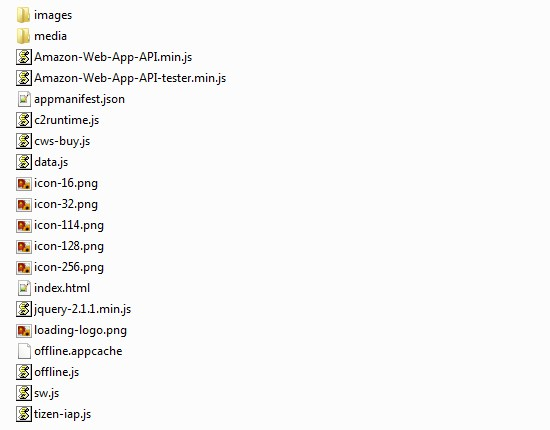
How to change images
If you would like to change only images in HTML5 version of the game then publish it to any website, you can do it easily. Just follow to /HTML5/ folder, where you can find /images/ folder that contains all images used in game, and just replace each image with yours, but retain an original sizes and proportions.
Also don't forget to change game icon in /HTML5/ folder. It is all what you need to change images in the game.
How to change sounds
To change sound effects and music in the game, just follow to /media/ folder, which located inside main /HTML5/ folder, where you can find all audio files used in game, in two required formats:
- .OGG - for Android and any other platform;
- .M4A - for iOS and Windows Phone.
Just replace each audio file (both .ogg and .m4a) with yours, but retain an original playing time.
When all neccessary changes will be completed, you can publish your HTML5 game to any website by uploading all contents from /HTML5/ folder to the server. That's all. To play the game tap the screen or press "space" button on keyboard to fly up.
3) Construct 2 - Modifying the game source code - top
Before opening .CAPX file, download and install in your Construct 2 two behaviours: Bound to layout Plus and Scroll To Plus!!!
SpaceTrip_v1_3.capx is a Construct 2 file with source code of the game. This game is already prepared for export to any popular mobile platforms as a native app, as a desktop app or as HTML5 website. You can edit the source code of the game, modifying these file. Be sure that you have a license of Construct 2 to make all changes in source code.
When you've opened this .capx file in Construct 2, you can find a project properties on left side of the main window. You can modify it according to your needs.
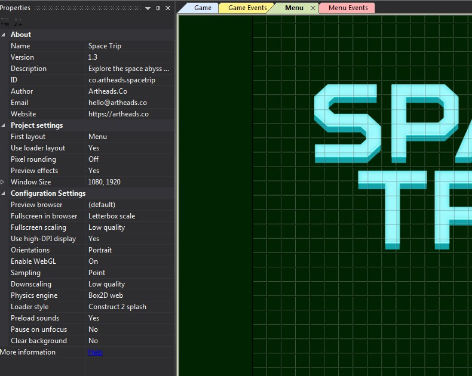
Properties
About
- Name - give a name for your game;
- Version - type a game version;
- Description - write a short description;
- Author - type your or company name;
- Email - type your email address;
- Website - type your website URL;
Project Settings
- First Layout - the layout that will be displayed first, when you launch the game. By default it is game menu layout;
- Use Loader Layout - It is no needed for this game, but if you would like to add a default loader screen - choose "yes"
- Window Size - here you can change window size of the game;
Configuration Settings
- Fullscreen in browsers - use "Scale Outer" for mobile game, or "Letterbox Integer Scale" for the web;
Leave other properties as it is. More detailed information about game project properties you can find in Official Construct 2 Manual.
Objects used in game
- AdmobAds plugin - allows you to manage advertisements for mobile version of the game;
- Audio plugin - allows you to use sounds and music in your game;
- Browser plugin - a plugin for interactions with browser;
- Array - an array object for coin shapes;
- bg - Tiled Background for game background;
- fade - tiled background object for smooth transition between layouts;
- boosters - a sprite for boosters in game;
- coin - a sprite for coins;
- colors - tiled background for automated color changing;
- crash - a sprite for explosion;
- Dictionary - an object for coin shapes storing;
- fb - a sprite for Facebook share button;
- tw - a sprite for Twitter share button;
- flash - a tiled background for screen flashing;
- font_best_result - a sprite font for the best score in menu UI;
- font_result - a sprite font for current score in menu UI;
- font_ui_health - a sprite font for health in game UI;
- font_ui_traveled - a sprite font for distance traveled in game UI;
- fuel_bar - tiled background for fuel meter;
- fuel_bg - a sprite for fuel meter bg;
- Logo - a sprite for game logo;
- help - a sprite for help icon;
- play - a sprite for "Play" button;
- player - a sprite for astronaut;
- IAP - In app purchases plugin;
- icon_health - icon for health on game UI;
- icon_traveled - icon for distance on game UI;
- jetparts - particles for player's jetpack fire;
- label_best_result - a sprite for "Best Score" label on menu layout;
- label_last_result - a sprite for "Last Score" label on menu layout;
- LocalStorage - a plugin for game data storing;
- market - a sprite for button linked to my play market;
- meteorites - sprite for meteorites;
- noads - a sprite for "remove ads" button;
- planets - a sprite for planets;
- playerbase - invisible sprite for player's base;
- sfx - a sprite for "Sound On/Off" button on menu layout;
- satellite - a sprite for satellites;
- star - a sprite for stars on background;
- Touch plugin - allows to use touchscreen as a player's control in game;
- sparks - a sprite for coin particles;
- trail - a sprite for the trail of the player's airplane, when the "shield" bonus is taken and active;
- water_0,1,2 - a tiled background objects for arranging a "waterscape" on foreground;
- sky - tiled background object for the main background;
Menu layout contains all objects placed on three separated layers (Check a "Menu" tab) and all events (Check a "Menu Events" tab) for the first screen of the game. Under "Menu" Tab you can see the game logo, UI buttons (Play, Social Share, Sound On/Off and Information), last and best score counters and animated background. All these objects are controlled by events under "Menu Events Tab".
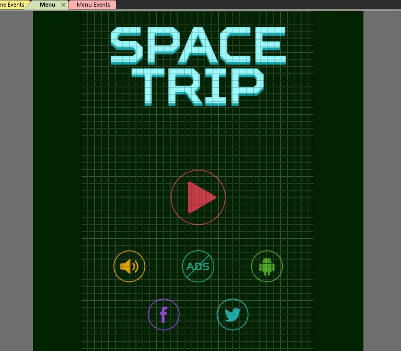
Menu Events
The first what you see under "Menu Events" tab are basic system events and a logic part of user interface. They controls such processes as the game start up, background animation, the latest and the best score counters value, state of the sound switch, logic part of the information popup and ad banner preloading.
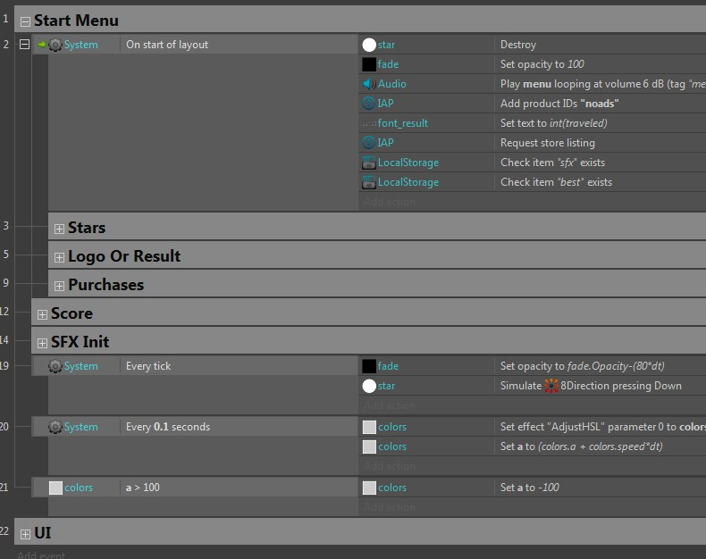
Here you can see a separate groups with the events for:
- Start Menu
- Stars
- Logo Or Result;
- Purchases;
- Score;
- SFX Init;
- UI;
And there is no dedicated button to exit the game via game menu interface, because the mobile "Menu" button can be used to close it.
5) Game and Game Events - top
Game layout contains all objects (Game tab) and all events (Game Events tab) for the main screen of the game. There are three separated layers:
- HUD - game interface;
- Game - active game objects;
- Bg - background;
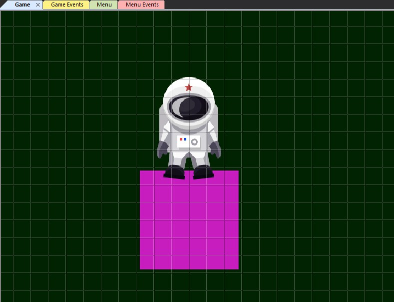
Game Events
Under "Game Events" you can see all main events of the game layout. These events are separated by groups, and each group is responsible for certain logic part. Above the groups you can see 5 global variables:
- state - default state of the player;
- objects - default value of object spawner;
- traveled - default value of traveled distance;
- maxtraveled - default value of maximum traveled distance;
- coins - default value of collected coins;
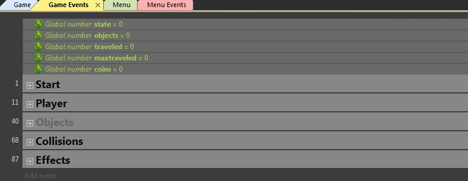
Start events
The first event group contains the system events that execute on start of game layout. There is nothing to change if you don't really know what are you doing.
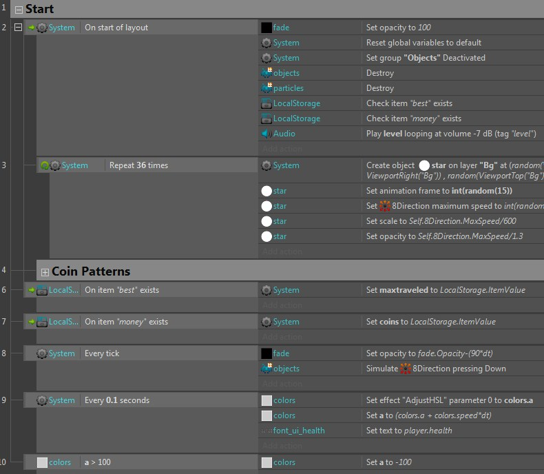
Player events
This group contains events created to control the player behaviour during the game play.
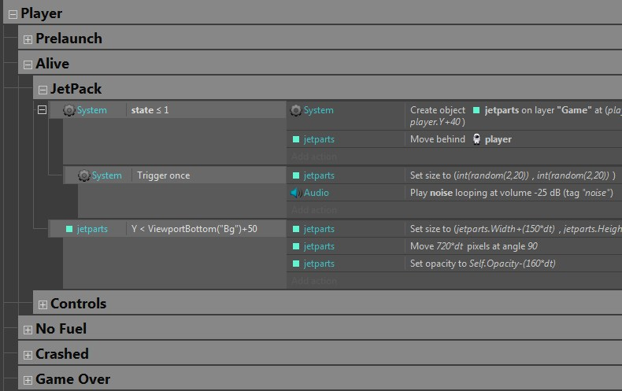
Objects events
This group contains events which are controls basic behaviours of obstacles in game, such as planets, meteorites and satellites.
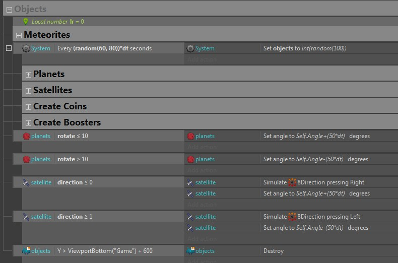
Collisions events
This group contains all the events relating to the object collisions in the game, and implications of these collisions. You can see the next basic collision events:
- Between the player and planets;
- Between the player and satellites;
- Between the player and meteorites;
- Between the player and bonuses.
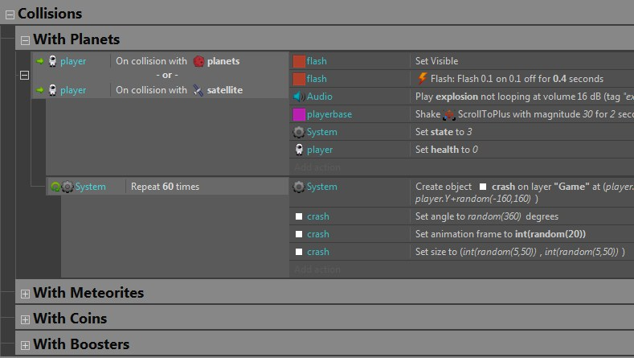
Effects events
Events in this group control behaviours of effects then destroys it outside of layout. It allows to save memory and improve overall performance of the game..
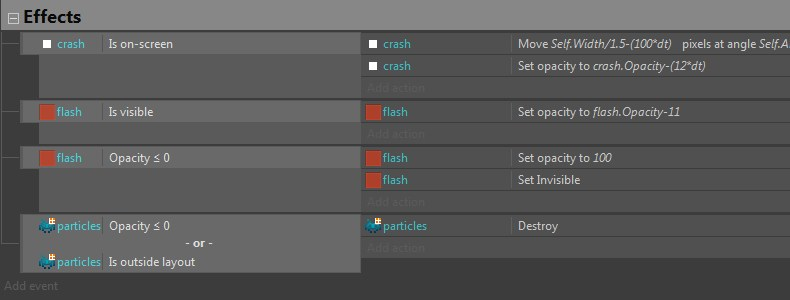
9) Facebook sharing system - top
You can find social sharing script in Sharing folder of this package. There are two files:
- share.php
- share.jpg
Open share.php file with Notepad++ and change the settings such as domain name, title, description and path to the share.jpg file to yours. Then upload both files to any hosting supporting PHP. Then change URLs in the game - in the Menu Events tab (screenshot below).
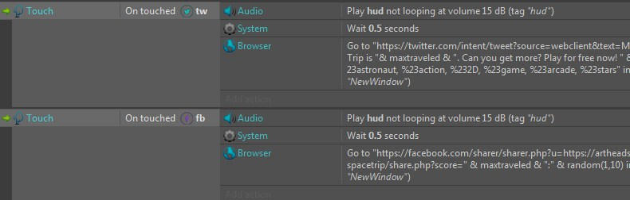
Once again, thank you so much for purchasing this game template. As I said at the beginning, I'd be glad to help you if you have any questions relating to this template. No guarantees, but I'll do my best to assist. If you have a more general question relating to the templates on CodeCanyon, you might consider visiting the forums and asking your question in the "Item Discussion" section.
Created by ArtHeads
Construct 2 manual and tutorials
Construct 2 manual
Construct 2 tutorials
Go To Table of Contents